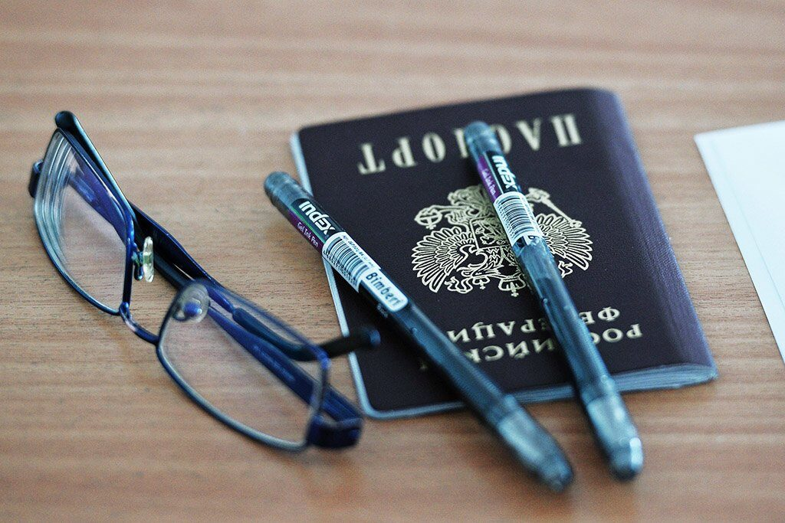

Почему десятки тысяч граждан страны нуждаются в «паспортной амнистии».
По меньшей мере несколько десятков тысяч россиян живут без паспорта
Паспорта законопослушным
Уполномоченный по правам человека Татьяна Москалькова считает, что в России необходимо еще раз провести «паспортную амнистию». Под ее действие должны попасть «добропорядочные граждане» страны, оставшиеся без паспорта по разным причинам. В первую очередь речь идет о жителях, у которых аннулированы полученные в 1990-е права
«Ко мне по этому поводу приходили и сами люди, попавшие в эту ситуацию, и правозащитники», — заявила омбудсмен в интервью РБК, опубликованном в среду, 25 июля. По ее мнению, подход к амнистии должен быть дифференцированным: каждый случай нужно рассматривать индивидуально. Иначе может получиться так, что государство поощрит нарушителей.
Оценки числа россиян без паспортов сильно разнятся: от несколько десятков тысяч, внесенных в базы Федеральной миграционной службы, до миллиона — такая цифра была получена по итогам переписи. «Почему у этих граждан нет паспортов — трудно сказать: утеряли, забыли сменить», — отметила Москалькова. Она напомнила, что профильные ведомства работают над созданием реестра лиц без документов.
Цифры в «несколько десятков тысяч» 16 июля озвучил первый замглавы МВД Александр Горовой на совещании по совершенствованию миграционного законодательства в Совете Федерации.
Первая волна
В 2000-х массово начали признавать паспорта россиян недействительными. Под раздачу попали многие добропорядочные граждане, у которых на момент получения документа в 1992 году не было регистрации. В их числе было множество граждан бывших советских республик, бежавших на территорию России в начале 1990-х. В 2009 году этой проблемой занялась Генпрокуратура. Надзорное ведомство раскритиковало действия Федеральной миграционной службы, запретив произвольно лишать людей гражданства и оставлять их без документов на руках. Прокуроры указали, что при замене паспортов жителей страны заставляют подтверждать гражданство.
Истребование документов, не предусмотренных законом, способствует возникновению коррупционных проявлений и злоупотреблениям служебным положением в территориальных органах ФМС, а также создает социальную напряженность в обществе при массовом нарушении прав граждан, что является недопустимым.Заявление Генпрокуратуры
В тот же год российские власти занялись упрощением процедуры получения гражданства для носителей русского языка, проживающих за рубежом — бывших граждан СССР.
В 2012 году вступил в силу закон о «паспортной амнистии». Он позволил узаконить гражданство десятков тысяч жителей страны, которые получили паспорта в 1991—2002 годах, а потом лишились их при замене — документы повально признавали недействительными. Причиной тому стало то, что при получении гражданства чиновники не внесли их в соответствующие базы. Во многих случаях, как отмечали парламентарии, этим пренебрегали в посольствах бывших советских республик — именно они предоставляли документы для оформления паспорта гражданина РФ.
«В 90-е годы были случаи, когда люди получали паспорт, а в базу данных их не вносили. То ли в этот день света не было, то ли сотрудник был… в не очень рабочем состоянии, но так получилось, что паспорт гражданина РФ у человека есть, а в информационных базах его нет, — объяснял председатель Совета при президенте РФ по развитию гражданского общества и правам человека (СПЧ) Михаил Федотов. — А это значит, что невозможно устроиться на работу,
Люди без гражданства
В России, однако, еще предостаточно людей, которые так и не смогли добиться справедливости и вернуть себе документы. В прошлом году в аппарат уполномоченного по правам человека поступило почти 60 таких обращений, отмечается в докладе омбудсмена по итогам 2017 года.
Складывающаяся практика фактического лишения гражданства лиц, при оформлении документов которых по вине сотрудников миграционных органов были допущены ошибки, не соответствует позиции Конституционного суда РФ, указавшего, что решение о приобретении человеком гражданства может быть отменено только в случаях отсутствия законных оснований для приобретения российского гражданства и возникновения устойчивой правовой связи лица с РФ.
Поправки, принятые Госдумой шесть лет назад, действуют до 2020 года и проблему комплексно не решают — паспорта у граждан изымают по сей день. Причем с этой проблемой сталкиваются и те, кто получил гражданство после 2002 года. Кроме того, те же трудности испытывают жители Крыма, которым аннулировали российские паспорта, выданные «в суматохе 2014 года» — после референдума о самоопределении полуострова.
Когда стало известно о первых случаях изъятия паспортов в 2015 году, в региональном управлении ФМС заявили, что они касались студентов из Украины. Чиновники утверждали, что им ошибочно выдали документы — временная регистрация в крымском общежитии не давала им права на получение гражданства РФ. Однако впоследствии стало ясно, что эти случаи не единичны. По оценкам аппарата уполномоченного по правам человека, примерно у 4 тыс. жителей Крыма аннулированы паспорта.
Ранее Татьяна Москалькова предлагала точечно провести «паспортную амнистию» именно для крымчан, оказавшихся в сложном положении. «Если люди не имеют другого гражданства, недвижимости в Украине, другого паспорта, на мой взгляд, им нужно простить ошибки оформления», — подчеркивала она.
Паспорт налево
Проблемы с паспортами есть не только у крымчан и тех, кто стал жертвой безалаберности специалистов в 1990-е. Житель Воронежской области Алексей Коротков до сих пор в качестве удостоверения личности предъявляет ксерокопию паспорта гражданина Советского Союза. «Паспорт СССР никто не отменял, он заменяет паспорт гражданина РФ согласно так называемой паспортной амнистии. Вот недавно и в облсуд меня пропустили именно по этой бумаге», — рассказывал мужчина в интервью воронежскому Агентству городских коммуникаций.
В 1990-х он вернулся из Узбекистана на историческую родину. Паспорт получил, только вот его потеряли полицейские при задержании Короткова — он отбыл наказание за кражу. О подобных случаях, когда бывшие заключенные попадают в юридический лабиринт, говорят в самом МВД. Законопроект, который полиция намерена внести на рассмотрение парламента, предполагает выдачу временных удостоверений личности и для этих граждан.
В Приморском крае без российских паспортов осталась целая семья
Нам прислали письмо из Амурского управления миграционной службы, что мы не граждане России, что якобы незаконно полученные нами паспорта подлежат изъятию, а нам нужно уезжать в Туркменистан.Елена Поминова
В конечном счете правоохранительные органы выяснили, что глава районного УФМС в нарушение закона выдала паспорта семье, а в сопроводительных документах указала номер о предоставлении гражданства другому человеку.
Не будет лишним
Людям, оставшимся без паспорта не по собственной вине, может грозить не только депортация, но и административное преследование. «Возможно привлечение к ответственности по ст. 19.15 КоАП РФ “Проживание гражданина РФ без документа, удостоверяющего личность”. Штраф — от 2 до 3 тыс. руб. (для Москвы и
Пока не очень понятно, что имеется в виду под «паспортной амнистией». Возможно, речь идет об отмене административного наказания для людей, потерявших паспорт, либо речь об упрощенном порядке его получения для определенных категорий лиц.Денис Фроловруководитель коммерческой практики юридической компании BMS Law Firm
Если амнистия будет проведена, изменений в законодательстве не потребуется — порядок восстановления паспорта регулируется подзаконными актами.
Собеседник портала iz.ru предполагает, что амнистия в первую очередь коснется граждан, проживающих в Крыму и тех, чьи паспорта были аннулированы еще в 1990-х. «Насколько эта мера окажется популярной, сказать сложно, однако в любом случае это сократит число граждан РФ, которые живут без паспорта», — резюмировал Фролов.
Кого коснется и что изменит паспортная амнистия в РоссииИсточник: https://news.mail.ru